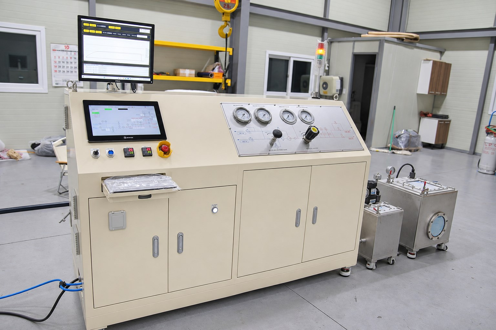

BUFFER TANK
고압 및 저압 버퍼탱크
매체를 일시 저장해 사용처의 공급 변동을 줄입니다.
설비 사양 보기
고압장비 설계 및 제작 전문기업으로 풍부한 설계 연구경험을 가지고 있습니다.
특히 국내외 기준(KB ISO, KGS, EN, ASME 등)의 기술분석을 통한 압력제품의 규격에 맞게 제작이 가능하며 독자적 안전두께 산출과 금속제품 구조해석이 가능합니다.
이를 통해 1~200 MPa급의 소형 압력용기 및 테스트 장비를 구축하여 고압제품의 성능시험 장비 구축에 경험을 쌓았으며 자체 시험시스템도 구축하고 있습니다.
본사는 현장에서 쌓은 기술과 경험을 바탕으로, 국내 산업이 고압 기술 경쟁력을 높이고 더 안전하게 발전하는 데 보탬이 되고자 합니다.
PRODUCTS
EQUIPMENT
BUFFER TANK
매체를 일시 저장해 사용처의 공급 변동을 줄입니다.
설비 사양 보기
MANUAL PRESSURIZATION
작업자가 수동 펌프를 조작해 시험 회로에 압력을 형성합니다.
설비 사양 보기
PROOF TEST
정해진 시험압력에서 시험체의 구조적 건전성을 확인합니다.
설비 사양 보기
LEAK TEST
정해진 조건에서 시험체의 누설 여부를 확인합니다.
설비 사양 보기
BURST TEST
시험체가 파손되는 압력과 파손 양상을 기록합니다.
설비 사양 보기
STRUCTURAL ANALYSIS
시험 조건에 따른 하중과 차폐 구조를 검토합니다.
설비 사양 보기CONTACT